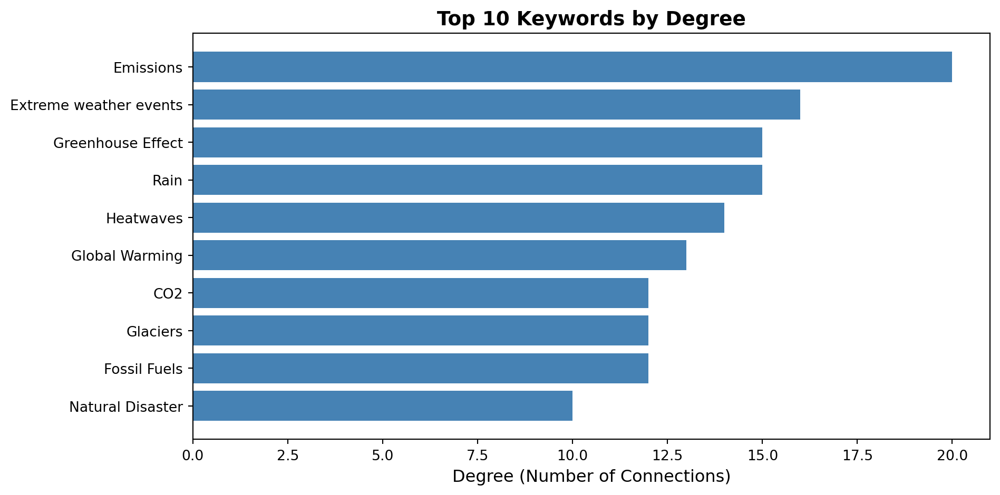
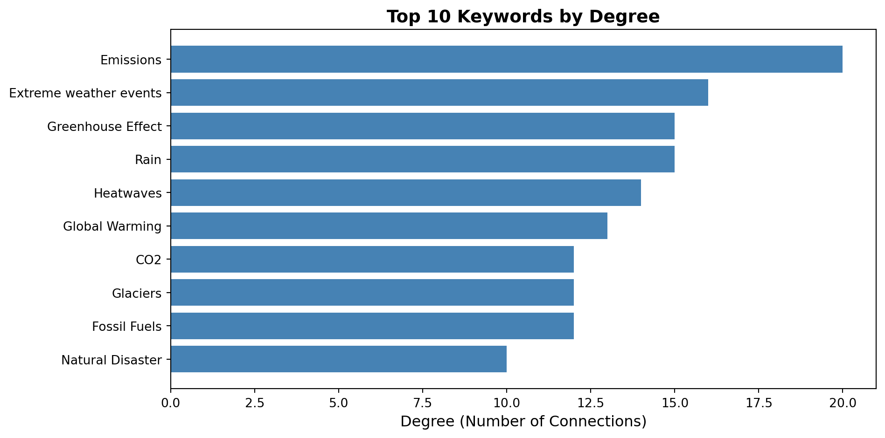
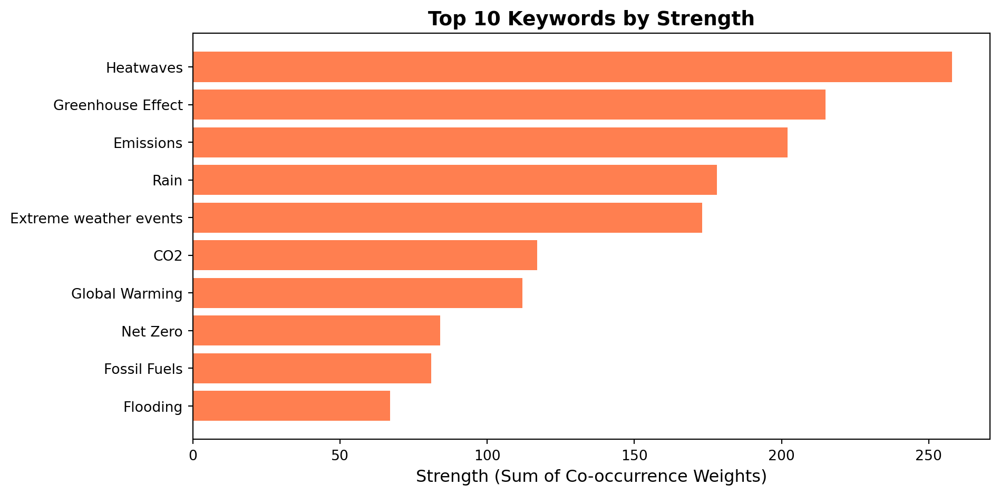
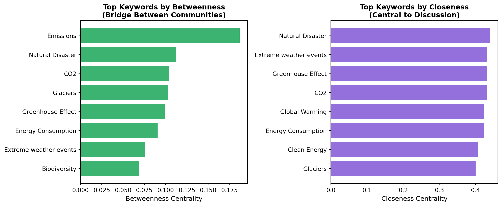
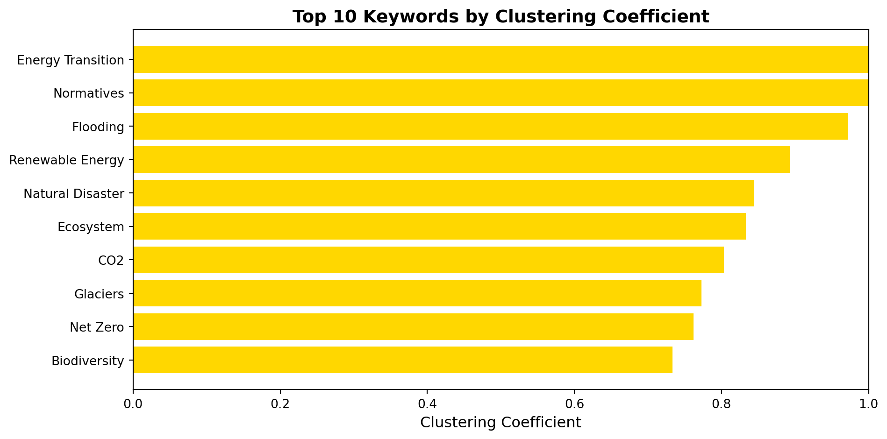
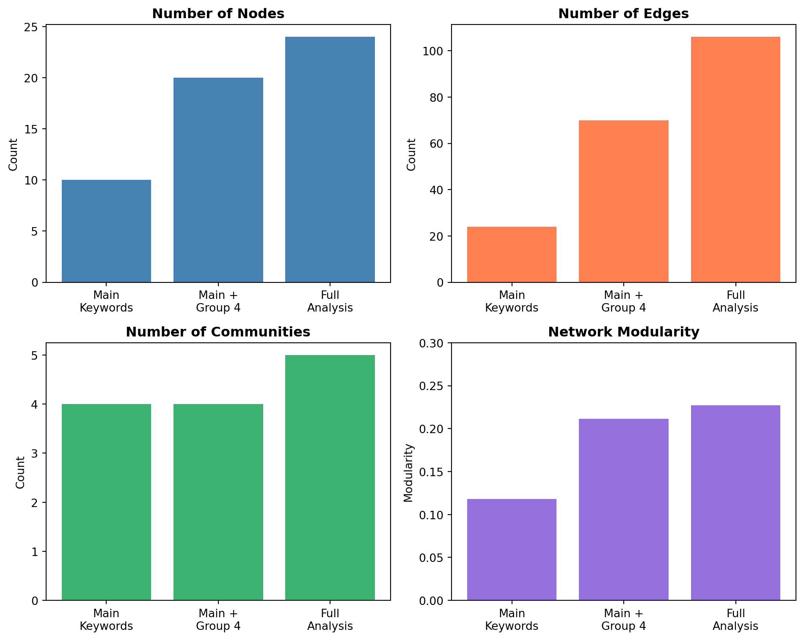

Bluesky Social Media Study
2025-12-15
This study offers a detailed view of how climate-related and energy-related concepts are discussed on Bluesky.
Research Approach:
Key Insight: Each keyword represents a node, while edges describe co-occurrence frequency in posts.
Period: January 1, 2023 - November 25, 2025
Locations: California, Quebec, Norway
Total Posts: 4,957
Main Keywords (Shared)
Our Keywords (Group 4)
Extras: Natural Disaster, Clean Energy, Net Zero, Tesla, AI
Total: 25 keywords analyzed (24 connected + 1 isolated)
We performed three levels of analysis to understand how keyword selection affects network structure:
| Analysis | Keywords | Nodes | Edges | Communities | Modularity |
|---|---|---|---|---|---|
| Main Keywords | 10 | 10 | 24 | 4 | 0.118 |
| Main + Group 4 | 20 | 20 | 70 | 4 | 0.212 |
| Full Analysis | 25 | 24 | 106 | 5 | 0.227 |
Key Observation:
Focus: Full analysis with 24 connected keywords
| Metric | Value | Interpretation |
|---|---|---|
| Average Degree | 8.833 | Each keyword connects to ~9 others on average |
| Graph Density | 0.384 | 38.4% of possible connections exist |
| Clustering Coefficient | 0.645 | Strong local clustering - keywords form tight groups |
| Diameter | 3 | Maximum 3 steps between any keywords |
| Average Path Length | 1.613 | Keywords are very close to each other |
| Connected Components | 2 | One main cluster + one isolated node |
Interpretation: Highly interconnected network with strong local clustering.
Algorithm: Louvain Method | Modularity: 0.227
Finding: Clear thematic separation between scientific concepts, policy actions, weather impacts, and energy systems.

Most Connected: Emissions (20), Extreme weather events (16), Greenhouse Effect (15)

Strongest Connections: Heatwaves (258), Greenhouse Effect (215), Emissions (202)

Bridge Keywords (connecting different communities):
Interpretation: These keywords serve as conceptual bridges in climate discourse, linking different thematic areas.
Most Central Keywords (close to all others):
Interpretation: Core concepts in climate discussions - positioned at the heart of the discourse network.

High Clustering: Indicates keywords whose neighbors are also connected, forming tight thematic groups.

Tools & Methods:
Reproducibility:
2025-12-13_10-52-01_868fa108✅ Climate discourse on Bluesky is highly interconnected with clear thematic communities
✅ Five distinct communities identified: Policy, Impacts, Science, Energy, Misinformation
✅ Bridge keywords like “Emissions” and “Natural Disaster” connect multiple domains
✅ Strong local clustering indicates coherent thematic groupings
✅ “Fake News” isolation suggests misinformation operates in separate discourse space
✅ Group-specific keywords revealed more nuanced community structure
Network analysis provides valuable insights into the structure of climate discourse on social media.
Project Team: Group 4
Repository: https://www.github.com/francescosilvano/keyword-network-analysis
Data: 4,957 Bluesky posts (2023-2025)
Analysis: Full analysis with 25 keywords, 5 communities